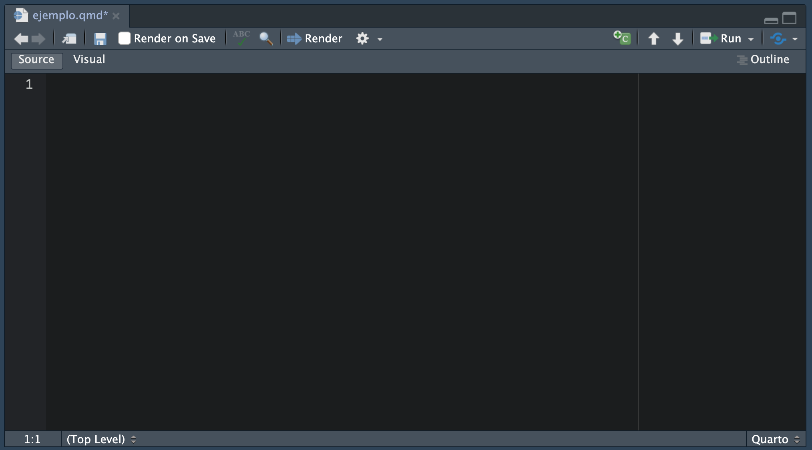
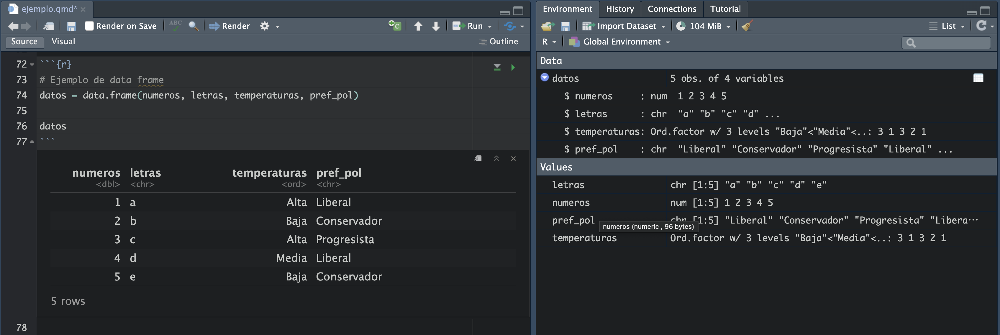

# setwd("ruta/de/tu/carpeta")2 Fundamentos de R
En el capitulo anterior establecimos la importancia de la ciencia estadística para la investigación. Hacer análisis estadístico implica necesariamente realizar numerosos cálculos matemáticos, organizar los resultados y crear gráficos que representen adecuadamente los hallazgos de nuestra investigación. Para ello, han surgido numerosos programas de análisis estadístico, cada uno con enfoques y características particulares. Una de esas herramientas es R, el lenguaje de programación que utilizaremos en esta guía para explorar los fundamentos de la estadística.
R es un lenguaje de programación y un entorno de software creado específicamente para el análisis estadístico y la representación gráfica. Fue desarrollado en la década de 1990 por los estadísticos Ross Ihaka y Robert Gentleman (DataCamp 2023) . El lenguaje R fue desarrolado como un esfuerzo por diseñar una herramienta que facilite la aplicación de métodos estadísticos desde básicos hasta avanzados y que sea lo suficientemente flexible para adaptarse a diversas necesidades de investigación y análisis.
La mayor ventaja de R radica en que es un software de código abierto y gratuito, lo que significa que no existen barreras económicas, cualquiera puede descargarlo y usarlo sin costo alguno. Esto ha asegurado que tenga una comunidad activa que continuamente expande sus capacidades inclso fuera del análsis estadístico.
Por lo tanto, R es una herramienta sumamente útil para realizar una gran conjuto de tareas, muchas de ellas necesarias para responder a las preguntas planteadas en nuestra investigación. Estas tareas incluyen:
Manipulación y limpieza de datos: Filtrar, transformar y limpiar conjuntos de datos para organizarlos y prepararlos de manera adecuada para el análisis posterior.
Análisis descriptivo: Resumir y describir los datos utilizando diversas medidas, como promedios, medianas y desviaciones estándar, para comprender sus características principales.
Creación de gráficos y visualización de datos: Crear gráficos simples, como gráficos de barras y líneas, hasta visualizaciones complejas que muestren relaciones y patrones en los datos.
Modelado estadístico: Aplicar técnicas como regresión lineal y no lineal, análisis de varianza y modelos multivariantes para comprender, interpretar y explorar las relaciones entre objetos.
2.1 R como lenguaje de programación
Para dar un poco de contexto, cuando decimos que R es un “lenguaje de programación”, nos referimos a que, en este sistema, los usuarios escribimos código, y es la máquina la que se encarga de ejecutar las instrucciones, llevando a cabo las tareas que queramos realizar. A diferencia de otros programas que utilizan botones o menús predefinidos, en R el código es el protagonista: aquí especificamos, paso a paso, las operaciones que queremos ejecutar.
Llamamos “lenguaje” a estos sistemas porque tienen mucho en común con los idiomas humanos. Así como en español necesitamos un vocabulario para expresar ideas, en R contamos con funciones, objetos y operadores que nos permiten comunicarnos con la computadora. De manera similar, la gramática en un idioma dicta cómo organizar las palabras para construir frases coherentes, y en R la sintaxis define cómo estructurar el código para que sea comprensible y funcional.
Piensa por un momento en cómo aprendes un nuevo idioma: primero necesitas familiarizarte con su vocabulario, entender las reglas gramaticales que rigen cómo se estructuran las oraciones y luego practicar combinándolos para expresar ideas más complejas. Aprender R no es muy diferente. El código es su vocabulario, compuesto por funciones, objetos y operadores que utilizamos para comunicar instrucciones a la computadora.
Al igual que hay múltiples idiomas, también existen muchos lenguajes de programación, cada uno adaptado a propósitos específicos. Python, por ejemplo, es conocido por su uso en inteligencia artificial y desarrollo web, mientras que SQL se utiliza para gestionar bases de datos. Si bien esta guia no tocará otros lenguajes espero también te sirva sirve como una excelente introducción al mundo de la programación.
2.2 Instalación de R y RStudio
Para utilizar R desde nuestras computadoras, debemos instalar R y RStudio, ya que ambos se utilizan conjuntamente. Sin embargo, no son lo mismo:
- R: Es el lenguaje de programación y entorno de software en el que se realizan análisis estadísticos y se crean paquetes. R forma la base que necesitaremos para realizar cálculos, análisis y visualización de datos.
- RStudio: Un entorno de desarrollo integrado (IDE) para R, usado para escribir scripts y ejecutar análisis, así como para producir informes. RStudio proporciona una interfaz más fácil y amigable de navegar además de añadir otras herramientas útiles al momento de trabajar.
Un IDE (Entorno de Desarrollo Integrado) es un programa que ayuda de manera inteligente a escribir y ejecutar el código de manera organizada. Es una herramienta todo en uno que cuenta con un área para escribir el código, verificar errores, ejecutarlo y ver los resultados. También tiene características útiles, como resaltado de comandos e intentat predecir tu próximo código y darte sugerencias de opciones mientras se escribe.
Pasos para instalar R:
- Visita la página oficial de R.
- Dirígete a la sección de descargas y selecciona el enlace apropiado para tu sistema operativo (Windows, macOS, Linux).
- Sigue las instrucciones de instalación.
Pasos para instalar RStudio:
- Visita la página oficial de RStudio.
- Navega a la sección de descargas y selecciona “RStudio Desktop”.
- Elige el instalador adecuado para tu sistema operativo y sigue las instrucciones de instalación.
2.3 Interfaz
Para empezar, vamos a utilizar RStudio. Lo primero que debemos hacer es familiarizarnos con la interfaz. Al abrirlo, probablemente lo primero que veas es lo siguiente.

Hay cuatro paneles, cada uno indispensable y con un conjunto de funcionalidades:
- Source: Todo el código que escribes en R se realiza en el panel Source. El código R es simplemente tu conjunto de instrucciones en el lenguaje R para que la computadora complete las tareas dadas.
- Consola: La consola es la consola interactiva R. Aquí es donde la mayoría de las funciones se ejecutan al instante. Aquí es donde aparecen los resultados de los cálculos y procedimientos que hemos solicitado al programa. Se utiliza principalmente para una verificación rápida y también para ver el resultado de tus scripts.
- Entorno: La pestaña Entorno es la lista de todos los objetos que has creado en tu trabajo. Algunos ejemplos de objetos son vectores, matrices, marcos de datos, listas, gráficos y funciones.
- Archivos/Gráficos/Paquetes/Ayuda:
- Archivos: Son para navegar por el sistema de archivos de tu computadora directamente desde RStudio.
- Gráficos: Después de ejecutar el código R, puedes ver las imágenes creadas por el código R.
- Paquetes: La herramienta gestiona los paquetes que has instalado.
- Ayuda: El equivalente de Google para R. Puedes buscar cualquier información sobre las funciones e incluso encontrar el tutorial necesario.
La ventaja original del panel Source es la capacidad de editar rápidamente tu código, el cual puedes volver a ejecutar. Este aspecto incluye tanto la reproductividad como la eficiencia; por ejemplo, podemos ajustar nuestro código sin rehacerlo desde cero. Además, podemos guardar nuestro trabajo como un archivo, podemos almacenar nuestros scripts en un editor de computadora, podemos distribuirlo, podemos editarlo o publicar este archivo nuevamente. Pero para trabajar de manera organizada, también es importante tener una buena estructura para almacenar todo lo relacionado con el proyecto.
Cuando trabajamos en proyectos de análisis de datos, es común manejar varios archivos relacionados: tus scripts (donde escribirás el código), los datos que analizarás y los resultados generados. Tener una carpeta específica para cada proyecto te ayuda a mantener todo organizado en un solo lugar. Además, R necesita saber dónde buscar y guardar los archivos, y eso se define mediante el directorio de trabajo, que es simplemente la carpeta donde R guardará y buscará archivos automáticamente.
2.3.1 Crear y configurar tu carpeta de trabajo
- Crea una carpeta específica:
- En tu dispositivo, crea una nueva carpeta para tu proyecto (por ejemplo, “MiProyectoR”). Este será el lugar donde guardarás todos los archivos relacionados.
- Establece la carpeta como directorio de trabajo:
En RStudio, ve al panel Files, ubicado generalmente en la parte inferior derecha.
Puedes usar el botón New Folder para crear una nueva carpeta si aún no lo has hecho.
Navega hasta la carpeta que creaste y selecciona More > Set As Working Directory. Esto le dice a RStudio que todos los archivos guardados o abiertos estarán relacionados con esta carpeta.
Verás en la consola un mensaje como:
2.3.2 Crear un archivo de script
Cuando trabajamos en R, utilizamos diferentes tipos de archivos para organizar y guardar nuestro trabajo. Dos formatos comunes son el archivo R Script y el documento Quarto. Ambos se utilizan para escribir código, pero cumplen propósitos diferentes que es importante entender.
Un archivo R Script es un archivo simple donde escribimos y guardamos nuestras instrucciones de código. Sirve como un registro de los comandos que ejecutamos, permitiendo reutilizarlos o ajustarlos más adelante. Sin embargo, este tipo de archivo no incluye espacio para explicaciones extensas ni muestra los resultados directamente junto al código.
En cambio, un documento Quarto va más allá al permitir combinar texto explicativo, bloques de código y los resultados generados (como tablas y gráficos) en un solo archivo. Además, es posible exportar el archivo final en formatos como HTML, PDF o Word, haciéndolo ideal para documentar y compartir análisis de manera profesional (de hecho, este libro esta hecho en Quarto). Esta capacidad de integrar explicación, análisis y presentación en un mismo lugar hace que Quarto sea particularmente útil para aprender y comunicar análisis de datos. En este libro, vamos a utilizar documentos Quarto.
- Accede a la ventana Files:
- En RStudio, localiza el panel Files. Este panel muestra el contenido de la carpeta de trabajo que configuraste previamente.
- Crea un nuevo documento Quarto:
- En el panel Files, haz clic en el botón New File y selecciona Quarto Document.

- Aparecerá un cuadro de diálogo donde puedes configurar el título del documento, tu nombre y el formato de salida inicial (HTML es una buena opción para empezar). Haz clic en Create.
- En el panel Files, haz clic en el botón New File y selecciona Quarto Document.
- Guarda automáticamente en la carpeta de trabajo:
- Cuando crees el documento desde la ventana Files, este se guardará automáticamente en tu carpeta de trabajo configurada. No necesitas realizar pasos adicionales para seleccionar la ubicación.
En un archivo Quarto puedes combinar texto explicativo (en formato Markdown) con bloques (chunks) de código en R. Los bloques de código son las secciones donde escribirás las instrucciones que deseas ejecutar, y están delimitados por tres backticks (```) seguidos del lenguaje que estás utilizando (en este caso, r). Para agregar un bloque de código de manera rápida, puedes utilizar el atajo de teclado:
- Ctrl + Alt + I en Windows y Linux.
- Cmd + Option + I en Mac.
Este atajo insertará automáticamente un nuevo chunk en tu documento, con la estructura básica para que puedas empezar a escribir tu código. Un chunk de código tiene este formato:
```{r}
# Aquí escribes tu código en R
```Dentro del chunk, puedes incluir cualquier instrucción que se ejecutará cuando proceses el documento. Esto permite mantener el texto explicativo y el código separados pero integrados en el mismo archivo, lo que facilita la organización y presentación del análisis.
Este enfoque es primordial para que trabajes directamente desde tu carpeta de trabajo, asegurando que todos los archivos relacionados con el proyecto estén organizados y listos para reproducir o compartir.
2.3.3 Flujo de trabajo
Cuando trabajamos con un documento Quarto, seguimos un flujo estructurado que combina texto explicativo, bloques de código y los resultados generados en un único archivo. Este flujo de trabajo organiza y centraliza nuestro análisis, garantizando que sea reproducible y fácil de compartir. Para ello, debemos entener el rol de cada panel.
La consola en RStudio es el núcleo donde se procesan las instrucciones que escribimos. Cada vez que ejecutas un bloque de código, este se envía a la consola, donde R lo interpreta y devuelve un resultado. Piensa en la consola como el “cerebro” que recibe tus órdenes, las ejecuta y genera una respuesta, ya sea un cálculo, un gráfico o una tabla. La consola de RStudio es la sección donde puedes escribir código directamente y ejecutarlo inmediatamente al presionar Enter.
Aunque puedes escribir directamente en la consola, las instrucciones que ingresas allí no se guardan automáticamente, por lo que no es ideal para documentar o reproducir tu trabajo.
La fuente, que en nuestor caso es un documento Quarto, actúa como un registro estructurado de tu análisis.

Dentro de él, puedes combinar texto explicativo con bloques de código llamados chunks. Para ejecutar un chunk completo:
Haz clic en el botón Play que aparece en la esquina superior derecha del chunk.
Alternativamente, coloca el cursor dentro del chunk y presiona:
Ctrl + Shift + Enter en Windows y Linux.
Cmd + Shift + Enter en Mac.
Al ejecutar el chunk, todas las líneas dentro de él se enviarán a la consola para ser procesadas.
Estos chunks permiten escribir instrucciones que la consola ejecutará, pero al estar integrados en el documento, también puedes guardarlos y reproducirlos en el futuro. Esto hace que el documento Quarto sea una herramienta ideal para registrar tus pasos, explicar tus decisiones y presentar los resultados de forma clara. Los gasos generalmente son los siguentes:
Esta lógica nos permite:
Escribir el código en un chunk: Cada chunk de código se delimita por tres backticks (
```) y se utiliza para dar instrucciones específicas a R. Por ejemplo:5 + 5[1] 10Este código le dice a R que sume 5 y 5. Cuando lo ejecutas, R procesa la operación en la consola y devuelve el resultado.
Anotar el código con comentarios: Para aclarar el propósito de una línea de código o hacer notas útiles, utilizamos el carácter
#. Todo lo que escribas después de este símbolo será un comentario y no se ejecutará. Por ejemplo:5 + 5 # Esto es una suma[1] 10Aquí, el comentario sirve para explicar lo que hace esta línea.
Texto explicativo: Una de las ventajas de Quarto es que permite intercalar texto explicativo con los chunks de código. Esto facilita documentar el análisis y explicar los resultados, haciendo que el trabajo sea más comprensible y presentable.
Consola vs. documento Quarto: ¿cuándo usar cada uno?
Escribir directamente en la consola: Es útil para pruebas rápidas o cálculos sencillos que no necesitas guardar. Devuelve el resultado inmediatamente, pero no queda registrado.
Escribir en el documento Quarto: Es ideal para cualquier análisis que quieras documentar, reproducir o compartir. Al escribir en un chunk, puedes ejecutar el código igual que en la consola, pero además quedará registrado junto con tus explicaciones y los resultados obtenidos.
Cuando completes tu análisis, haz clic en el botón Render en la parte superior del archivo Quarto.
Presiona este botón para ejecutar todo el código en la consola y también para producir el documento final con el formato seleccionado HTML (con más extensiones incluso puede exportar a PDF o Word). Garantiza que tu trabajo esté organizado, documentado y listo para ser publicado.
2.4 Objetos
En R, cualquier entidad que se cree y preserve en la memoria durante una sesión se llama objeto. Puede ser un número, un texto, un conjunto de datos, una función, un gráfico y así sucesivamente. Puedes almacenar datos en objetos y luego usarlos para cálculos o análisis. Para poder ah\\hacer ello, utilizamos el operador = o <- para asignar un valor a un objeto. Por ejemplo, podemos asignar el resultado de una operación a un objeto:
# Asignar el valor 10 al objeto 'a'
a = 10
# Asignar el resultado de una suma al objeto 'b'
b <- 4 + 7Una vez que un objeto ha sido asignado, podemos utilizarlo en operaciones posteriores:
# Sumar las objetos 'a' y 'b'
a + b[1] 212.4.1 Nombrar un objeto
Podemos declarar (nombrar) a un objeto como deseemos, pero su nombre no debe tener espacios. Por eso, a veces usamos guiones bajos (_) para conectar dos palabras, por ejemplo, mi_objeto o resultado_final.
Las objetos se almacenan en el entorno (environment) de R y lo puedes apreciar en la ventana superior derecha del entorno de RStudio.

2.5 Funciones
Anteriormente mencionamos que R es un lenguaje de programación que nos permite comunicarnos con la computadora para que esta realice tareas utilizando nuestros datos (input) y nos devuelva un resultado (output). Para que estas tareas se lleven a cabo, primero debemos indicarle a la computadora cómo hacerlo, y estas indicaciones se dan a través de funciones. Las funciones son instrucciones representadas por palabras seguidas de paréntesis, que le dicen a R que ejecute una acción específica.

Las funciones en R pueden recibir argumentos (los valores que se colocan dentro del paréntesis). Estos argumentos pueden ser tanto los datos a procesar como instrucciones adicionales que le indican a la función cómo debe realizar la tarea.
Por ejemplo, la función sum() sirve para sumar múltiples valores.
# Sumar 10, 20 y 30 usando la función sum()
sum(10, 20, 30)[1] 60La función round() redondea un número, y podemos especificar cuántos decimales queremos conservar. Aquí, el primer argumento es el número a redondear, y el segundo es una instrucción que indica cuántos decimales mantener.
round(2.54934, 2)[1] 2.55Las funciones son fundamentales para trabajar en R, son la columna vertebral del lenguaje y nos permiten realizar tareas de todo tipo, desde cálculos simples hasta análisis complejos de datos. Muchas funciones ya vienen incluidas en R, pero otras han sido creadas por la comunidad y se encuentran en paquetes (que exploraremos más adelante). Además, tú mismo puedes crear tus propias funciones (Consulta el glosario de operaciones útiles, 12.0).
Por eso, aquí tienes una tabla con una clasificación que te ayudará a explorarlas:
| Categoría | Función | Descripción |
|---|---|---|
| Matemáticas y Estadísticas | ||
| Realizan cálculos matemáticos o análisis estadísticos sobre los datos. | sum() |
Suma todos los valores proporcionados. |
mean() |
Calcula el promedio de un conjunto de datos. | |
sd() |
Calcula la desviación estándar de un conjunto de datos. | |
round() |
Redondea un número al número de decimales especificado. | |
log() |
Calcula el logaritmo de un número en la base especificada (por defecto, base e). | |
| Manipulación de Datos | ||
| Estas funciones permiten estructurar, transformar y filtrar conjuntos de datos para su análisis. | length() |
Devuelve la longitud de un vector o lista. |
head() |
Muestra las primeras filas de un conjunto de datos. | |
tail() |
Muestra las últimas filas de un conjunto de datos. | |
subset() |
Extrae subconjuntos de datos según una condición especificada. | |
merge() |
Combina dos conjuntos de datos en función de una clave común. | |
| Visualización | ||
| Ayudan a crear gráficos y representaciones visuales de los datos para facilitar su interpretación. | plot() |
Crea gráficos básicos a partir de datos. |
hist() |
Genera un histograma para datos continuos. | |
boxplot() |
Crea un diagrama de caja para representar la dispersión de los datos. | |
barplot() |
Genera un gráfico de barras. | |
| Control de Flujo | ||
| Permiten estructurar el código para que se ejecute en función de condiciones específicas. | if() |
Ejecuta una acción si se cumple una condición. |
else() |
Proporciona una alternativa cuando la condición de if no se cumple. |
|
for() |
Itera a través de una secuencia y ejecuta una acción para cada elemento. | |
while() |
Repite una acción mientras se cumpla una condición. | |
| Entrada/Salida | ||
| Facilitan leer datos de archivos y guardar los resultados en diversos formatos. | read.csv() |
Lee datos desde un archivo CSV y los convierte en un marco de datos. |
write.csv() |
Guarda un marco de datos en un archivo CSV. | |
readRDS() |
Carga datos guardados en formato RDS. | |
saveRDS() |
Guarda datos en formato RDS. | |
| Modelado Estadístico | ||
| Permiten ajustar modelos y realizar análisis estadísticos avanzados. | lm() |
Ajusta modelos lineales simples o múltiples. |
glm() |
Ajusta modelos lineales generalizados. | |
summary() |
Proporciona un resumen estadístico de un modelo o conjunto de datos. | |
| Transformación de Texto | ||
| Ayudan a operar sobre cadenas de texto, como combinarlas, dividirlas o cambiar su formato. | paste() |
Combina varias cadenas de texto en una sola. |
strsplit() |
Divide una cadena en partes según un separador. | |
toupper() |
Convierte texto a mayúsculas. | |
tolower() |
Convierte texto a minúsculas. | |
| Trabajo con Fechas | ||
| Facilitan trabajar con datos que incluyen fechas y horas. | Sys.Date() |
Devuelve la fecha actual del sistema. |
as.Date() |
Convierte datos en formato de fecha. | |
difftime() |
Calcula la diferencia entre dos fechas. |
Nota: No te precupes, no debes conocerlas todas aún. A medida que avancemos en el libro, exploraremos muchas de estas funciones en detalle. Sin embargo, te animo a echar un vistazo a su diversidad para que te familiarices con las capacidades que R ofrece.
2.6 Paquetes
En R, muchas de las cosas que queremos hacer se pueden realizar con “paquetes”. En R, un paquete es generalmente un conjunto de herramientas con funciones específicas para realizar tareas específicas. Existen paquetes para prácticamente todo. Por ejemplo, el paquete dplyr (6.5) es un paquete ampliamente utilizado para la manipulación de datos como filtrar valores o crear nuevas columnas. Pero antes, necesitamos entender la diferencia entre instalar un paquete y cargar un paquete en R.
2.6.1 Instalar un paquete
Me gusta pensar que instalar un paquete en R es similar a ir a la tienda y comprar una caja de herramientas. Después de comprarla, la mueves a tu propio almacén para asegurarte de que la tendrás cuando la necesites. Esto solo necesita hacerse una vez por paquete, a menos que quieras actualizarlo (tener la última versión).
Con R, instalamos un paquete con una función llamada install.packages() seguida del nombre del paquete entre comillas.
install.packages('dplyr')2.6.2 Cargar un paquete
Cuando cargas un paquete en R, es como si sacaras la caja de herramientas del almacén y la pusieras en tu mesa de trabajo. Solo entonces las herramientas dentro de la caja te son accesibles para tus proyectos. Haces esto cada vez que comienzas un nuevo documento o una sesión de R.
Para hacerlo, usamos la función library().
También puedes lograr esto con :: si quieres usar una función completa de otro paquete, pero no quieres cargar el paquete completo. Esto es como sacar una herramienta específica de la caja, pero no poner toda la caja en tu mesa de trabajo.
Por ejemplo, el paquete psych tiene una función describe que produce un resumen estadístico detallado de un conjunto de datos dado. Si queremos aplicarlo en un conjunto de datos predeterminado en R como iris, podemos hacerlo sin cargar todo psych:
# Usar la función describe del paquete psych con el conjunto de datos iris
psych::describe(iris) vars n mean sd median trimmed mad min max range skew
Sepal.Length 1 150 5.84 0.83 5.80 5.81 1.04 4.3 7.9 3.6 0.31
Sepal.Width 2 150 3.06 0.44 3.00 3.04 0.44 2.0 4.4 2.4 0.31
Petal.Length 3 150 3.76 1.77 4.35 3.76 1.85 1.0 6.9 5.9 -0.27
Petal.Width 4 150 1.20 0.76 1.30 1.18 1.04 0.1 2.5 2.4 -0.10
Species* 5 150 2.00 0.82 2.00 2.00 1.48 1.0 3.0 2.0 0.00
kurtosis se
Sepal.Length -0.61 0.07
Sepal.Width 0.14 0.04
Petal.Length -1.42 0.14
Petal.Width -1.36 0.06
Species* -1.52 0.07Proporciona un resumen estadístico de los datos: media, desviación estándar, mínimo, máximo, etc., todo sin tener que cargar todo el paquete psych. Si nunca has escuchado sobre estas cosas antes, no te asustes, vamos a usar psych en la sección de Estadística Descriptiva (7.0) para calcular e interpretar estadísticas descriptivas para nuestros datos.
Recuerda:
Cuando instalas un paquete, estás tomando la caja de herramientas y asegurándola en tu propio almacén.
Cargar un paquete, entonces, es poner esa caja de herramientas en tu mesa de trabajo para que puedas usar sus herramientas.
Importar una función del paquete es como sacar una herramienta de la caja.
2.7 Elementos
En R, los elementos son las unidades básicas que componen los datos. Estos elementos tienen un tipo de dato que define su naturaleza, cómo pueden manipularse y las operaciones que pueden realizarse con ellos. Los tipos de elementos en R están directamente relacionados con los tipos de variables utilizados en análisis estadístico que vimos en el capítulo anterior, como variables numéricas (continuas y discretas), categóricas (nominales y ordinales) y lógicas (binarias).
2.7.1 Tipos de elementos
a. Logical (Lógicos)
- Representan valores binarios:
TRUEoFALSE. - Asociados a variables dicotómicas en estadística.
x <- TRUE # Elemento de tipo logical
y <- FALSEÚtil para variables lógicas o binarias, como “aprobado” (TRUE) y “reprobado” (FALSE).
b. Integer (Enteros)
- Representan números enteros, como conteos o cantidades.
- Se definen agregando una “L” después del número.
x <- 42L # Elemento de tipo integer
y <- -3LÚtil para variables numéricas discretas, como número de hijos.
c. Numeric (Numéricos)
- Representan números decimales o reales, como medidas continuas.
- Incluyen valores positivos, negativos y fracciones.
x <- 7.85 # Elemento de tipo numeric
y <- -23.2Directamente relacionado con variables numéricas continuas, como peso o altura.
d. Character (Cadenas de Texto)
- Representan texto o cadenas de caracteres.
- Utilizados para datos categóricos o nominales.
x <- "Peru" # Elemento de tipo character
y <- "Colombia"| Tipo de Variable | Definición | En R |
|---|---|---|
| Numéricas Continuas | Valores dentro de un rango continuo, como altura, peso, temperatura. | Numeric: Representa decimales o reales. |
| Numéricas Discretas | Valores enteros que representan conteos, como número de personas o hijos. | Integer: Representa números enteros, sin decimales. |
| Categóricas Nominales | Categorías sin un orden inherente, como colores o géneros. | Character: Representa texto (e.g., “rojo”, “azul”). |
| Categóricas Ordinales | Categorías con un orden lógico, como niveles educativos (bajo, medio, alto). | Character o Factor: Puede usarse texto, aunque los factores facilitan el orden. |
| Variables Lógicas (Binarias) | Solo dos valores posibles, como sí o no, aprobado o reprobado. |
Logical: Representa valores TRUE o FALSE. |
Por ejemplo:
# Creamos distintos tipos de objetos
num = 3.5
logic = FALSE
chr = "Peru"
# Los podemos mostrar con solo llamar el nombre de la objeto
num[1] 3.5logic[1] FALSEchr[1] "Peru"Una forma muy práctica de asegurarnos qué tipo de elemento es la objeto es llamar a la función class(), simplemente tomando como argumento el nombre del objeto:
class(num)[1] "numeric"Hagámoslo para el resto:
class(logic)[1] "logical"class(chr)[1] "character"2.7.2 Operaciones básicas
En R, los valores numéricos y lógicos son elementos computables. Es decir, pueden utilizarse para realizar operaciones matemáticas mediante operadores aritméticos. Los operadores más comunes incluyen:
- Adición:
+ - Sustracción:
- - Multiplicación:
* - División:
/ - Exponencial:
^
A continuación, algunos ejemplos prácticos:
# Operaciones básicas
4 + 7 # Suma: 11[1] 1110 - 6 # Resta: 4[1] 46 * 5 # Multiplicación: 30[1] 30(4 + 2) / 2 # División: 3[1] 3# Exponencial: 2 elevado a la potencia 5
2^5 # Resultado: 32[1] 32Los valores lógicos (TRUE y FALSE) también pueden ser usados en operaciones matemáticas. R los interpreta como números:
TRUEse considera igual a1FALSEse considera igual a0
FALSE + TRUE[1] 1FALSE + FALSE[1] 0TRUE + TRUE[1] 2Usar valores lógicos de esta forma puede ser muy útil, especialmente al trabajar con condiciones o conteos.
A diferencia de los valores numéricos y lógicos, los elementos caracteres (character) no pueden participar en operaciones matemáticas. Sin embargo, pueden ser manipulados mediante funciones específicas para manejar texto, como paste() y paste0(), que permiten concatenar (unir) cadenas de texto.
texto1 = "Hola"
texto2 = "Mundo"# Concatenar texto con un espacio
paste(texto1, texto2) [1] "Hola Mundo"# Concatenar texto sin espacio
paste0(texto1, texto2) [1] "HolaMundo"2.8 Tipos de objetos
Una vez establecido que un elemento se refiere al tipo de dato en sí mismo (como numérico, lógico o de caracteres). Ahora nos centraremos en los objetos. Un objeto es una estructura de datos que puede contener uno o más elementos. Los tipos de objetos principales incluyen vectores, matrices, listas, dataframes y factores.
- Vectores:
- Son una secuencia de elementos del mismo tipo.
- Pueden ser de tipo numérico, lógico, o de caracteres.
- Se pueden crear utilizando la función
c().
# Ejemplo de vector numérico
numeros = c(1, 2, 3, 4, 5)
# Ejemplo de vector de caracteres
letras = c("a", "b", "c", "d", "e")
numeros[1] 1 2 3 4 5letras[1] "a" "b" "c" "d" "e"- Matrices:
- Son una colección de elementos del mismo tipo, organizada en filas y columnas.
- Se pueden crear utilizando la función
matrix().
# Ejemplo de matriz numérica
matriz_numerica = matrix(1:9, nrow = 3, ncol = 3)
# Ejemplo de matriz de caracteres
matriz_caracteres = matrix(letters[1:9], nrow = 3, ncol = 3)
matriz_numerica [,1] [,2] [,3]
[1,] 1 4 7
[2,] 2 5 8
[3,] 3 6 9matriz_caracteres [,1] [,2] [,3]
[1,] "a" "d" "g"
[2,] "b" "e" "h"
[3,] "c" "f" "i" - Listas:
- Son una colección de objetos en un orden determinado que pueden ser de distintos tipos
- Se pueden crear utilizando la función
list().
# Ejemplo de lista
mi_lista = list(numeros, letras, matriz_numerica)
mi_lista[[1]]
[1] 1 2 3 4 5
[[2]]
[1] "a" "b" "c" "d" "e"
[[3]]
[,1] [,2] [,3]
[1,] 1 4 7
[2,] 2 5 8
[3,] 3 6 9
- Factores:
- Son una forma de sistematizar datos categóricos, puedes utilizarlos para ordenar tus variables ordinales o nominales.
- Se pueden crear utilizando la función
factor().
# Ejemplo de un factor
preferencias_politicas = c("Liberal", "Conservador", "Progresista",
"Liberal", "Conservador", "Progresista",
"Liberal", "Conservador")
# Ejemplo de factor ordenado
temperaturas = c("Alta", "Baja", "Alta", "Media", "Baja")
temperaturas = factor(temperaturas,
levels = c("Baja", "Media", "Alta"),
ordered = TRUE)- DataFrames:
- Son estructuras de datos tabulares similares a las tablas de una base de datos u hoja de cálculo.
- Las columnas pueden tener diferentes tipos de datos.
- Se pueden crear utilizando la función
data.frame().
# Ejemplo de data frame
datos = data.frame(numeros, letras, temperaturas)
datos numeros letras temperaturas
1 1 a Alta
2 2 b Baja
3 3 c Alta
4 4 d Media
5 5 e Baja
Nos detendremos en este capítulo en los vectores, pues son el tipo de objeto que, junto con el data.frame, encontraremos más frecuentemente en nuestro trabajo diario analizando datos. El resto de ellos los veremos con mayor detalle en el transcurso de la guía.
2.8.1 Vectores
Como ya habíamos dicho, un vector en R es una forma de almacenar y organizar una secuencia de elementos (numeric, logical, character) que podemos usar para diversas operaciones. Los vectores pueden contener números, texto o valores lógicos, y puedes realizar operaciones en todo el conjunto de valores en un vector a la vez.
Para crear un vector solo debemos escribir la función c() y poner cada elemento como argumento de esta forma:
c(2, 4, 6)[1] 2 4 6Podemos asignarle este vector a una objeto y R lo reconocerá
mi_vector = c(2, -4, 6)
mi_vector[1] 2 -4 6Funciona de la misma forma para elementos lógicos y de texto
mi_vector_log = c(FALSE, TRUE, TRUE, FALSE)
mi_vector_chr = c("Hey", "un placer")
mi_vector_log [1] FALSE TRUE TRUE FALSEmi_vector_chr[1] "Hey" "un placer"2.8.2 Operaciones con vectores
Además de crearlos, también podemos realizar operaciones matemáticas directamente sobre ellos. Supongamos que tienes un vector con los valores:
mi_vector = c(2, 4, 6, 3, 9, 12)Si sumas un número, este se aplica a cada elemento del vector:
mi_vector + 1[1] 3 5 7 4 10 13Multiplicar un vector por un número aplica la operación a cada elemento:
mi_vector * 2[1] 4 8 12 6 18 24Esto funciona con cualquier operador aritmético que necesites.
Si tienes dos vectores de igual longitud, R combina los elementos en la misma posición para realizar la operación:
otro_vector = c(1, 2, 3, 4, 14, 7)mi_vector + otro_vector[1] 3 6 9 7 23 19mi_vector * otro_vector[1] 2 8 18 12 126 84Además, R tiene funciones integradas para calcular estadísticas básicas sobre un vector. Estas son algunas de las más comunes:
- Suma total de elementos:
sum(mi_vector)[1] 36- Promedio de los valores:
mean(mi_vector)[1] 6- Máximo y mínimo del vector:
max(mi_vector) [1] 12min(mi_vector) [1] 2- Producto de todos los elementos:
prod(mi_vector)[1] 15552Adicionalmente, puedes realizar comparaciones directamente sobre los elementos de un vector. Esto genera un nuevo vector lógico (TRUE o FALSE) basado en si se cumple o no la condición.
Ejemplo:
# Siendo el vector
mi_vector[1] 2 4 6 3 9 12mi_vector > 3[1] FALSE TRUE TRUE FALSE TRUE TRUERecuerda que R interpreta TRUE = 1 y FALSE = 0. Combinar operaciones lógicas con funciones como sum() te permite contar cuántos elementos cumplen una condición:
sum(mi_vector > 3)[1] 4Si deseas verificar si todos los elementos cumplen una condición, puedes usar all():
all(mi_vector > 1)[1] TRUEPara verificar si algún elemento cumple una condición, utiliza any():
any(mi_vector > 18)[1] FALSE2.8.3 Selección de elementos en vectores
Puedes extraer elementos específicos usando corchetes []. Para acceder a un elemento en una posición específica, indica su índice dentro de los corchetes. Esto significa acceder a un valor según su posición dentro del vector. En R, las posiciones comienzan en 1, no en 0 como en otros lenguajes de programación (como Python, por eejmplo).
# Seleccionar el primer elemento del vector
mi_vector[1][1] 2Esto selecciona únicamente el elemento en la posición 1. Si quisieras acceder al tercer elemento, solo tienes que cambiar el índice:
# Seleccionar el tercer elemento del vector
mi_vector[3][1] 6Si necesitas varios elementos al mismo tiempo, puedes utilizar la función c() para indicar los índices que deseas seleccionar. Por ejemplo, si quieres el primer y el tercer elemento:
# Seleccionar el primer y cuarto elemento del vector
mi_vector[c(1, 4)][1] 2 3También puedes seleccionar un rango de elementos usando el operador :, que genera una secuencia de números. Por ejemplo, para seleccionar todos los elementos desde la posición 2 hasta la posición 4:
# Seleccionar un rango de elementos (del segundo al quinto)
mi_vector[2:5][1] 4 6 3 9En lugar de acceder a los elementos por su posición, también puedes utilizar operadores de comparación para filtrar elementos basándote en condiciones. Los operadores de comparación en R incluyen:
<para menor que.>para mayor que.<=para menor o igual que.>=para mayor o igual que.==para igualdad.!=para desigualdad.
Cuando usas un operador de comparación en un vector, R evalúa cada elemento y selecciona los que cumplan la condición (TRUE). Por ejemplo:
# Seleccionar elementos mayores que 10
mi_vector[mi_vector > 10][1] 12Esto devuelve todos los elementos del vector que son mayores que 10. Si quisieras filtrar los elementos que son menores o iguales a 6, lo harías así:
# Seleccionar elementos menores o iguales a 6
mi_vector[mi_vector <= 6][1] 2 4 6 3La comparación también funciona para buscar elementos iguales o diferentes a un valor específico. Por ejemplo, si quisieras encontrar solo los elementos iguales a 25:
# Seleccionar elementos iguales a 9
mi_vector[mi_vector == 9][1] 9O si quisieras excluir un valor en particular, puedes usar !=:
# Seleccionar elementos diferentes de 12
mi_vector[mi_vector != 12][1] 2 4 6 3 9Cuando necesitas aplicar más de una condición al mismo tiempo, puedes combinar operadores de comparación con los operadores lógicos & y |. Estas combinaciones te permiten filtrar elementos basados en condiciones más complejas.
Cuando utilizas & , estás pidiendo que todas las condiciones sean verdaderas al mismo tiempo para que un elemento sea seleccionado. Esto significa que cada elemento del vector debe cumplir cada condición individualmente.
Supongamos que quieres seleccionar elementos que sean mayores que 5 y al mismo tiempo menores que 10. La lógica es que un valor solo será seleccionado si cumple ambas condiciones. Así es como lo harías:
# Seleccionar elementos mayores que 5 y menores que 10
mi_vector[mi_vector > 5 & mi_vector < 10][1] 6 9Por otro lado, | selecciona elementos que cumplan al menos una de las condiciones. Esto significa que un elemento será seleccionado si cumple la primera condición, la segunda, o ambas.
Si quisieras seleccionar elementos que sean menores que 5 o mayores que 10, usarías |:
# Seleccionar elementos menores que 10 o mayores que 5
mi_vector[mi_vector < 10 | mi_vector > 10][1] 2 4 6 3 9 12Una forma sencilla de recordar esto:
- & (y lógico): Solo selecciona valores cuando todas las condiciones son verdaderas.
- | (o lógico): Selecciona valores cuando cualquiera de las condiciones es verdadera.
Cuando trabajas con vectores nombrados, puedes seleccionar elementos directamente usando sus nombres. Primero, debes asignar nombres a los elementos del vector. Esto se puede hacer al momento de crearlo o utilizando la función names():
# Crear un vector con nombres
names(mi_vector) = c("a", "b", "c", "d", "e", "f")Una vez que los elementos tienen nombres, puedes acceder a ellos indicando el nombre entre comillas:
# Seleccionar un elemento por su nombre
mi_vector["c"]c
6 También puedes seleccionar varios elementos utilizando un vector de nombres:
# Seleccionar varios elementos por sus nombres
mi_vector[c("b", "d")]b d
4 3 Los nombres son especialmente útiles cuando los elementos tienen un significado asociado, ya que hacen que el código sea más fácil de leer y entender.
Por último, debe saber también saber que puedes guardar los elementos seleccionados en un nuevo objeto para trabajar con ellos más adelante. Por ejemplo, si quisieras guardar todos los elementos mayores que 8 en un nuevo vector:
# Guardar elementos mayores que 8 en un nuevo objeto
valores_altos <- mi_vector[mi_vector > 8]De manera similar, podrías guardar los elementos menores o iguales a 4 en otro vector:
# Guardar elementos menores o iguales a 4 en un nuevo objeto
valores_bajos <- mi_vector[mi_vector <= 4]Al almacenar los resultados en nuevos objetos, puedes realizar análisis posteriores o manipular solo una parte específica de tus datos sin alterar el vector original.
valores_altos e f
9 12 valores_bajosa b d
2 4 3 2.9 Flor y el análisis de datos electorales
Flor decidió analizar los patrones de participación electoral en su región. Había encontrado un archivo con los porcentajes de participación de las últimas elecciones municipales y comenzó organizando su trabajo.
Lo primero que hizo Flor fue crear una carpeta en su computadora llamada “Proyecto_Electoral” y establecerla como su DIRECTORIO DE TRABAJO en RStudio. Esto aseguraba que todos los archivos y scripts se gestionaran de manera ordenada:
# setwd("C:/Usuarios/Flor/Documentos/Proyecto_Electoral")Con esta configuración, estaba lista para trabajar en su análisis.
Flor sabía que los datos que manejaría en su análisis podían representarse mediante diferentes TIPOS DE ELEMENTOS en R. Decidió repasar estos conceptos creando algunos ejemplos:
- ELEMENTOS NUMÉRICOS: Para almacenar valores continuos, como porcentajes de participación:
porcentaje = 68.5
class(porcentaje) [1] "numeric"- ELEMENTOS DE TEXTO: Para identificar las elecciones por su año:
eleccion = "2012"
class(eleccion) [1] "character"- ELEMENTOS LÓGICOS: Para indicar si la participación superaba el promedio:
alta_participacion = TRUE
class(alta_participacion) [1] "logical"Satisfecha con este repaso, Flor pasó a trabajar con TIPOS DE OBJETOS más complejos. Recopiló los porcentajes de participación de seis elecciones consecutivas y los almacenó en un VECTOR, que es un tipo de OBJETO que contiene ELEMENTOS del mismo tipo:
participacion = c(67.5, 74.6, 65.8, 78.3, 68.3, 66.7)Al ser un VECTOR NUMÉRICO, podía realizar operaciones directamente sobre todos sus elementos. Calculó el promedio de participación con la función mean():
promedio = mean(participacion)
promedio [1] 70.2Para hacer su VECTOR más legible, asignó nombres a los elementos, representando los años de las elecciones:
names(participacion) = c("2012", "2014", "2016", "2018", "2020", "2022")
participacion2012 2014 2016 2018 2020 2022
67.5 74.6 65.8 78.3 68.3 66.7 Esto resultó en un VECTOR nombrado, donde cada valor estaba asociado con su respectivo año. Luego, usó una OPERACIÓN LÓGICA para identificar las elecciones con participación superior al promedio. Esto devolvió un VECTOR LÓGICO, otro tipo de OBJETO que almacena ELEMENTOS TRUE o FALSE:
# El elemento objeto fue nombrado previamente
participacion > promedio 2012 2014 2016 2018 2020 2022
FALSE TRUE FALSE TRUE FALSE FALSE Luego, filtró los valores mayores al promedio utilizando esta condición:
participacion_alta = participacion[participacion > promedio]
participacion_alta2014 2018
74.6 78.3 De esta manera, Flor creó un nuevo VECTOR que contenía solo los años con alta participación.
Flor recordó que R tiene una gran cantidad de PAQUETES que extienden sus funcionalidades. Decidió usar el PAQUETE psych para obtener un resumen estadístico más detallado de su VECTOR de participación. Primero, instaló el PAQUETE:
# install.packages("psych")Luego, lo cargó en su sesión de trabajo:
Con la función describe() del PAQUETE psych, generó un resumen estadístico que incluía medidas como la media, la desviación estándar y los valores mínimo y máximo:
psych::describe(participacion) vars n mean sd median trimmed mad min max range skew kurtosis se
X1 1 6 70.2 5.05 67.9 70.2 2.45 65.8 78.3 12.5 0.6 -1.65 2.06Hablaremos con mayor detalle sobre describe y como podemos interpretar sus resultados en el capítulo 4.

2.10 Resumen del capítulo
R es un lenguaje de programación diseñado específicamente para el análisis estadístico y la creación de gráficos. Es gratuito, de código abierto, y cuenta con una comunidad activa que amplía continuamente sus capacidades. RStudio es el entorno donde se trabaja con R, organizando el código, los resultados y las herramientas en paneles funcionales: la Fuente para escribir y editar scripts, la Consola para ejecutar comandos, el Entorno para explorar objetos, y un panel adicional para gestionar gráficos, archivos y paquetes.
Las funciones son bloques de código que realizan tareas específicas, como cálculos, transformación de datos o visualización gráfica. Por ejemplo, sum() calcula la suma de valores. Los paquetes en R son colecciones de funciones especializadas que amplían las capacidades del lenguaje. Para usarlos, primero deben instalarse con install.packages() y luego cargarse con library().
Los elementos en R representan datos básicos y están asociados a tipos como numéricos (para valores continuos), enteros (para conteos), lógicos (TRUE o FALSE), y caracteres (texto). Estos tipos se relacionan con variables estadísticas, como valores continuos o categorías. Los elementos lógicos se usan para realizar comparaciones, y los numéricos permiten operaciones matemáticas básicas,.
Los objetos en R son estructuras que almacenan datos y facilitan su organización. Los principales tipos son: vectores (secuencia de elementos del mismo tipo), matrices (estructuras tabulares del mismo tipo), listas (colecciones heterogéneas), factores (categorías), y data frames (estructuras tabulares donde cada columna puede almacenar diferentes tipos de elementos).
Los vectores son el tipo de objeto más básico en R y contienen elementos del mismo tipo. Se pueden realizar operaciones matemáticas o estadísticas directamente sobre ellos.También es posible filtrar elementos con índices o condiciones lógicas,
2.11 Ejercicios
1. En RStudio, puedes escribir código tanto en el script como en la consola. ¿Cuál es la principal diferencia entre estos dos lugares?
a) El código escrito en el script se guarda para futuras referencias, mientras que el de la consola no se guarda automáticamente
b) El script permite ejecutar múltiples líneas de código, mientras que la consola solo ejecuta una línea a la vez
c) La consola es solo para pruebas rápidas y no permite editar el código como el script
d) Todas las anteriores
2. ¿Qué pasos debes seguir para instalar y luego cargar el paquete dplyr en R?
a) Ejecutar las funciones install.packages("dplyr") y luego library(dplyr) en ese orden
b) Escribir install.packages("dplyr") y luego automáticamente el paquete estará disponible en la sesión
c) Solo ejecutar library(dplyr) si ya tienes el paquete instalado previamente
d) Instalar el paquete una sola vez y luego no necesitas cargarlo manualmente nunca más
3. Tienes el siguiente vector en R:
mi_vector = c(3, 6, 9, 12)¿Qué operación correctamente suma 5 a cada elemento del vector?
a) sum(mi_vector + 5)
b) mi_vector + 5
c) mi_vector[mi_vector + 5]
d) mi_vector <- 5 + mi_vector
4. ¿Qué tipo de datos representan los siguientes valores en R?
- TRUE/FALSE
- 12.5, 4.3, 0.8
- “Rojo”, “Azul”, “Verde”
- Lógico; Numérico; Carácter
- Ordinal; Continuo; Nominal
- Lógico; Continuo; Texto
- Entero; Lógico; Nominal
5. Dado el siguiente vector:
valores = c(2, 4, 6, 8, 10)¿Qué código devuelve únicamente los elementos mayores a 6?
a) valores[valores > 6]
b) subset(valores > 6)
c) valores[6]
d) valores[valores < 6]
6. ¿Qué comando te permite verificar el tipo de datos almacenado en un objeto en R?
a) describe() b) sum()
c) mean()
d) class()
7. Un investigador trabaja con el siguiente objeto en R:
transporte <- c("Bus", "Taxi", "Bicicleta", "Bus", "Bicicleta")¿Qué tipo de objeto es transporte?
a) Matriz
b) Vector
c) Lista
d) Data Frame
8. ¿Cuál de las siguientes opciones define correctamente este factor en R?
factor(c("Alto", "Medio", "Bajo"),
levels = c("Bajo", "Medio", "Alto"),
ordered = TRUE)[1] Alto Medio Bajo
Levels: Bajo < Medio < Altoa) Una variable nominal
b). Un vector de caracteres
c). Un vector lógico
d). Una variable ordinal
9. Dado el siguiente vector:
numeros <- c(2, 4, 6, 8)¿Qué resultado devuelve la operación numeros * 2 + 1?
a) Un vector con valores: 3, 5, 7, 9
b) Un vector con valores: 5, 9, 13, 17
c) Un vector con valores: 6, 9, 12, 15
d) Un vector con valores: 4, 8, 12, 16
10. Supongamos que tienes el siguiente vector:
mi_vector <- c(3, 6, 9, 12, 15, 18)¿Qué código selecciona correctamente los elementos que son mayores a 5 y menores a 15?
a) mi_vector[mi_vector > 5 | mi_vector < 15]
b) mi_vector[mi_vector > 5 & mi_vector < 15]
c) mi_vector[5 & 15]
d) subset(mi_vector > 5 & mi_vector < 15)